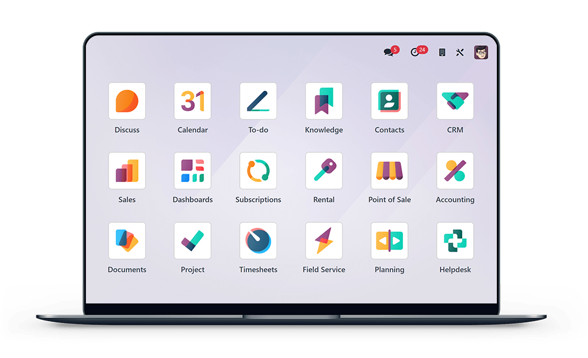

Gestiona citas, pacientes, facturación, inventario, documentos, equipo de trabajo y seguimiento desde una sola plataforma.

Cada día de operación sin una plataforma centralizada significa tiempo perdido, errores evitables y oportunidades de atención que se escapan.
Sin un sistema centralizado, los conflictos de horario generan esperas, pacientes insatisfechos y pérdida de confianza.
Pacientes interesados en tratamientos quedan en el olvido por falta de un proceso de seguimiento estructurado.
La facturación manual o en sistemas distintos duplica el trabajo, genera errores y dificulta el cobro oportuno.
Los insumos dentales se agotan sin previo aviso o se compran en exceso porque no hay visibilidad del stock real.
Localizar un consentimiento o historial de un paciente consume tiempo valioso y representa un riesgo legal.
Es imposible medir la productividad individual o tomar decisiones de negocio sin datos claros por profesional.
El control manual de horarios, ausencias y pagos genera inconsistencias y genera fricción con el equipo.
No saber qué tratamientos generan más valor o qué costos se disparan impide crecer de forma sostenida.
Con Odoo 19, todos los procesos de tu clínica convergen en un único ecosistema integrado, sin datos aislados ni procesos rotos.
"Todo lo que tu clínica necesita ya existe.
No se programa nada nuevo.
Odoo 19 se
configura, se adapta y se conecta para que tu clínica opere como una
empresa de primer nivel."
Un flujo claro y continuo que elimina los puntos de quiebre entre recepción, atención, facturación y comunicación.
El paciente contacta a la clínica por cualquier canal
Se agenda y el paciente recibe confirmación automática
Accede al historial y registra la atención
Factura electrónica generada desde la misma atención
Consentimientos y archivos al expediente digital
Dashboard en tiempo real con todos los KPIs de la clínica
Cada módulo es una pieza del ecosistema. Juntos forman la solución completa para tu clínica odontológica.
Agenda inteligente por odontólogo con disponibilidad en tiempo real. Confirmaciones automáticas y gestión de reprogramaciones sin conflictos.
AgendaSigue cada paciente potencial desde el primer contacto. Registra tratamientos de interés, presupuestos y el estado de cada oportunidad comercial.
CaptaciónExpediente completo de cada paciente: datos personales, historial de visitas, documentos asociados y comunicaciones anteriores en un solo lugar.
PacientesVista global de todos los odontólogos, salas y recursos de la clínica. Planifica jornadas y coordina sin superposiciones ni confusiones.
CoordinaciónEmite facturas y notas de crédito directamente desde la atención. Control de pagos, cuentas por cobrar y cumplimiento fiscal integrado.
FinanzasControl exacto de insumos dentales, materiales y equipos. Alertas automáticas de stock bajo y trazabilidad de consumo por tratamiento.
InsumosSolicitudes de compra automáticas basadas en el stock mínimo. Gestión de órdenes a proveedores dentales con control de recepción y costos.
ProveedoresRepositorio centralizado de consentimientos, indicaciones, fotografías, contratos y archivos clínicos. Acceso seguro desde cualquier dispositivo.
Expediente DigitalRecolecta firmas en consentimientos y documentos de forma segura y con validez legal. Elimina el papel y acelera el flujo de autorización.
LegalFicha completa de cada odontólogo y colaborador: contrato, documentos, especialidad, horario y estructura organizacional de la clínica.
RRHHRegistro y control de entradas, salidas y horas trabajadas de todo el equipo. Base para el cálculo de planilla y gestión de ausencias.
Control de TiempoLos odontólogos y el staff registran sus gastos clínicos y administrativos desde el móvil. Aprobación digital y control de reembolsos.
GastosMide la satisfacción del paciente tras cada atención. Obtén datos cualitativos para mejorar el servicio y detectar oportunidades de retención.
SatisfacciónProcesamiento de nómina basado en asistencias reales, comisiones por producción y reglas salariales configuradas para tu país y legislación.
NóminaInformes gerenciales personalizados, tablas dinámicas y dashboards configurables con los datos de toda la operación de la clínica.
AnálisisDesde la solicitud de cita hasta el seguimiento del paciente, todo el ciclo de atención queda registrado, organizado y accesible en segundos.
Cada profesional tiene su propia vista de agenda. Recepciones y coordinadores ven la disponibilidad de toda la clínica en tiempo real, evitando conflictos de horario.
Los pacientes reciben confirmaciones automáticas. Si deben reprogramar, el proceso es simple y queda registrado en el sistema sin pasos manuales.
Contactos, documentos adjuntos, tratamientos anteriores y comunicaciones previas centralizados para que el odontólogo llegue preparado a cada consulta.
Conecta lo que se hace en silla con lo que se factura, y lo que se usa con lo que se repone. Cero fricciones entre áreas.
Desde la atención hasta el cobro
Servicios de ejemplo configurados
Del consumo al reabastecimiento
Insumos de ejemplo gestionados
Tu clínica genera documentos críticos en cada atención. Odoo los centraliza, organiza y protege con acceso seguro desde cualquier dispositivo.
"Menos papel, más orden y acceso rápido a la información exacta cuando más la necesitas."
El módulo de Firma de Odoo permite que los pacientes firmen consentimientos y documentos de forma digital, desde cualquier dispositivo. La firma queda vinculada al expediente y tiene validez legal.
Una clínica bien administrada por dentro entrega mejor experiencia por fuera. Gestiona tu equipo con la misma eficiencia con la que atienes pacientes.
Ficha completa por colaborador: contrato, especialidad, documentos y datos de contacto centralizados.
Define jornadas laborales, turnos y disponibilidad por odontólogo. Base para asistencias y nómina.
Entradas, salidas y horas trabajadas automáticamente vinculadas al perfil del empleado.
Solicitud y aprobación digital de vacaciones, permisos y ausencias justificadas. Sin papeles.
Registro y aprobación de gastos clínicos y administrativos desde el móvil con respaldo fotográfico.
Nómina calculada sobre asistencias reales, horas extra y deducciones configuradas según tu legislación.
Define esquemas de comisión por tratamiento realizado o por metas alcanzadas. Integrado a la nómina.
Reporte de citas atendidas, tratamientos realizados e ingresos generados por profesional.
Visibilidad completa de los costos operativos de la clínica para tomar decisiones con base en datos.
El dashboard gerencial de tu clínica muestra en un vistazo todo lo que importa: producción, ingresos, asistencia y comportamiento de pacientes.
Cada módulo configurado correctamente se convierte en una ventaja operativa real y medible para tu clínica.
Automatiza recordatorios, confirmaciones, compras por stock bajo y muchas tareas repetitivas del equipo.
Agenda en tiempo real, sin conflictos de horario y con acceso diferenciado por rol y odontólogo.
Stocks controlados, alertas tempranas y compras automáticas para que nunca falte un insumo crítico.
La factura surge del servicio, no de un proceso paralelo. Menos errores, cobros más rápidos.
Expedientes completos en la nube. Acceso seguro, inmediato y sin perder nada por mala organización.
Asistencias, horarios, gastos y productividad por persona centralizados para decisiones precisas.
Dashboard gerencial actualizado al instante con todos los indicadores que la dirección necesita ver.
Reportes por odontólogo, tratamiento y área para que la dirección tome decisiones basadas en hechos.
La diferencia no es solo tecnológica. Es operativa, financiera y en la experiencia de cada paciente que entra por tu puerta.
No se trata solo de implementar un software. Se trata de ordenar toda la operación: pacientes, citas, facturación, inventario, documentos, equipo de trabajo y reportes en tiempo real, desde una sola plataforma oficial y probada.
Solicitar demostración gratuita